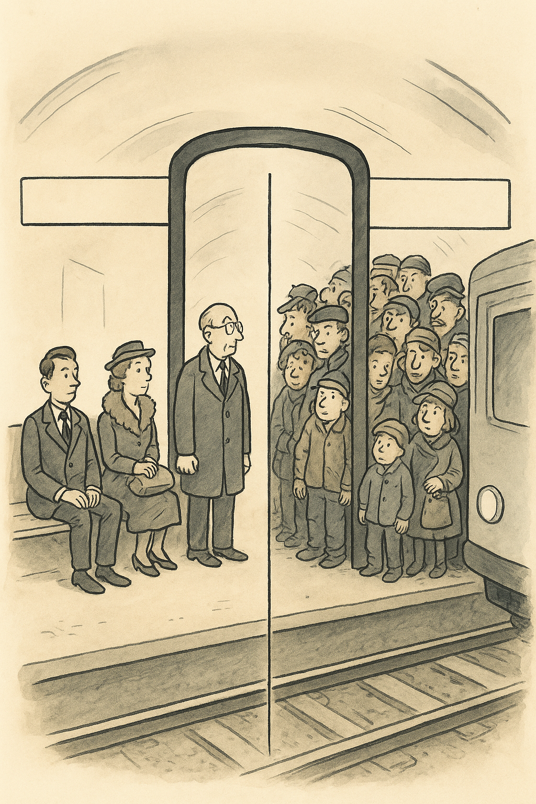
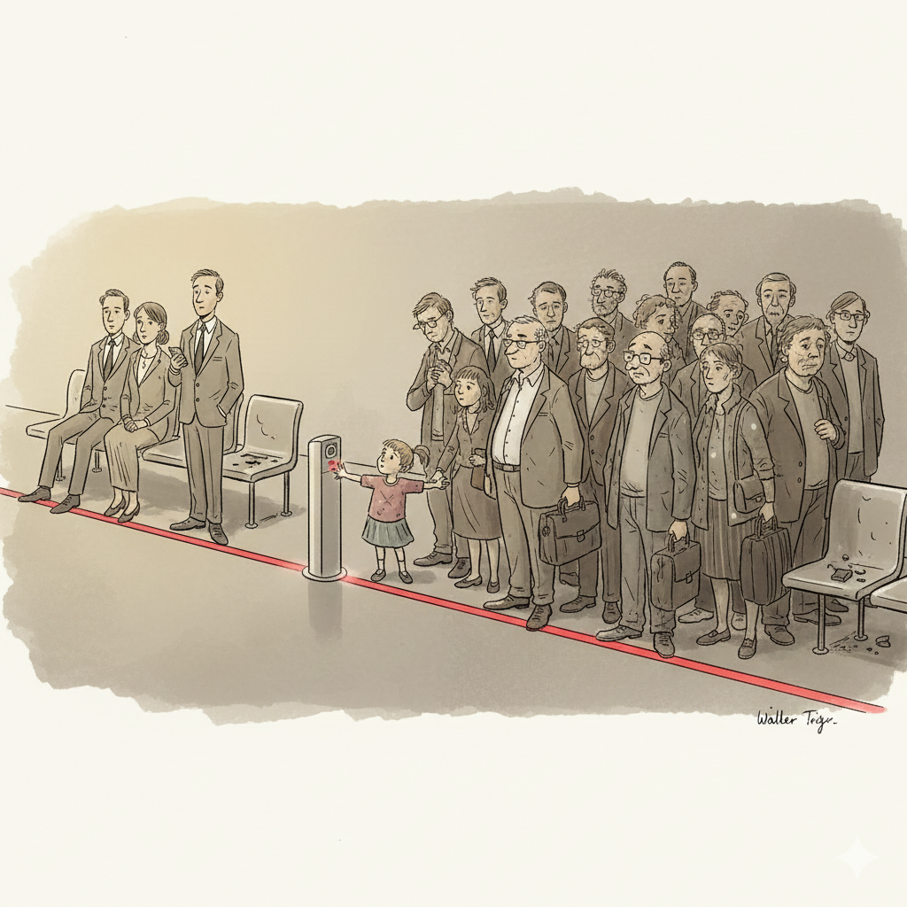
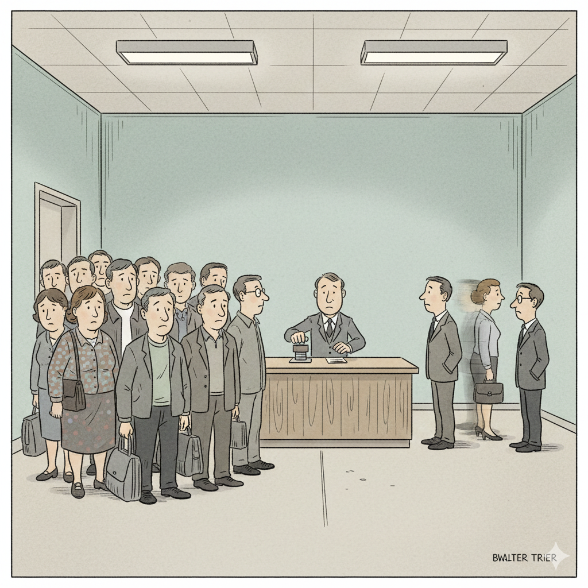
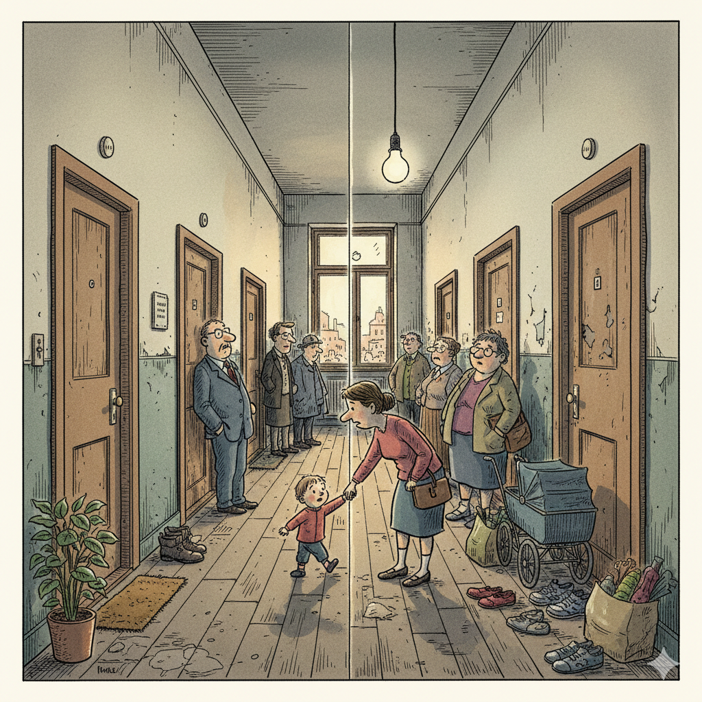

Die U-Bahn-Trennung

Die unsichtbare Schwelle: Manche warten, manche gleiten. Mobilität als Performance.
Der Wohnungsflur

Zwei Seiten eines Flurs. Die Miete ist dieselbe, aber der Score entscheidet über den Zustand des Alltags.
Nochmal U-Bahn

falls ich den Text lasse hier noch was einfügen.
Der Wohnungsflur<

Zwei Seiten eines Flurs. Die Miete ist dieselbe, aber der Score entscheidet über den Zustand des Alltags.